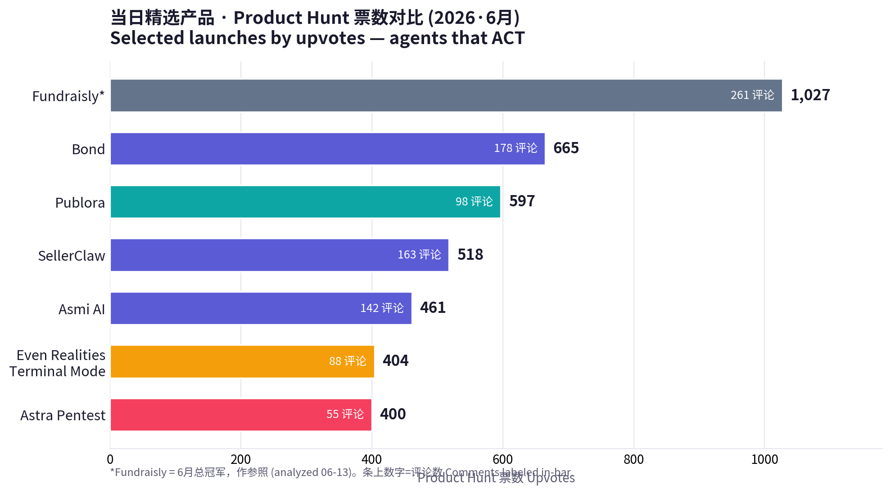
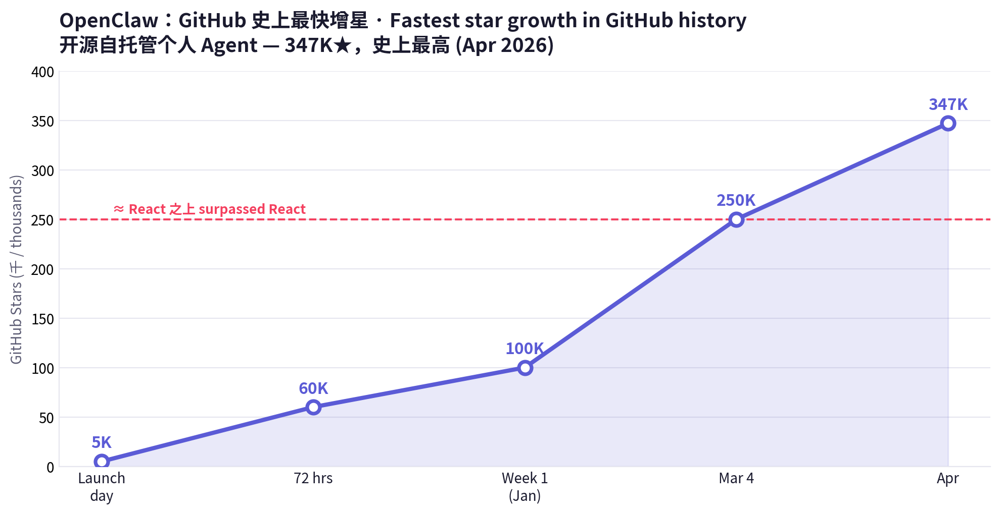
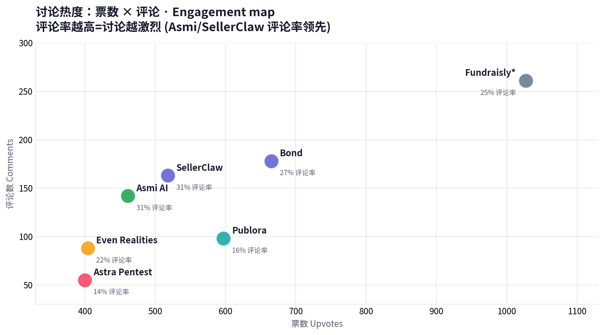

日期 Date: 2026-06-14（周日 Sunday）
数据来源 Sources: Product Hunt · Hacker News · Google Trends · a16z · Amazon Movers & Shakers · X · LinkedIn · 小红书（榜单经 hunted.space 直采 + 公开搜索摘要补充 via direct fetch + public search summaries）
⚠️ 方法说明 Methodology note：本次运行 Product Hunt 榜单与票数已通过 hunted.space 成功直采（含逐产品票数/评论数）；producthunt.com、x.com、linkedin.com、xiaohongshu.com 仍为登录墙/客户端渲染，按任务规则未做绕过，相关口碑改用 WebSearch 公开摘要。本期产品均与 06-13 报告不重复（聚焦本周新上榜的"执行型 Agent"）。PH leaderboard + vote counts were fetched directly via hunted.space this run; social platforms remain login-walled and were covered via public search summaries. All products here are distinct from the 06-13 report.
中文：如果说上周的主线是"AI 从演示走向执行"，本周它更进一步——Agent 开始亲自动手干现实世界的活。Product Hunt 六月新榜被一批"会替你做事"的代理霸占：Bond（665 票）当你的 AI 幕僚长，把散落的待办变成"自己会完成的清单"；Asmi AI（461 票）直接拿起电话，替你打给牙医、银行、保险，过 IVR、等叫号、跟真人沟通；SellerClaw（518 票）派出一队 AI 代理替你运营整间电商店铺；连安全也自治化了——Astra（400 票）的 AI 红队 5 分钟内自动渗透你的系统。围绕这些代理，一条完整"代理栈"正在成形：Publora（597 票）给 Agent 装上社媒"双手"，Even Realities 的智能眼镜（404 票）让你随时盯着代理干活，而开源界的 OpenClaw（GitHub 史上最高 347K★）则掀起"自己拥有 Agent"的反订阅浪潮。a16z 同期的论点恰好对上：AI 时代赢家卖的是结果，把软件+数据+硬件+人力打包成"全栈胖创业"，并把网络安全自动化列为 2026 大命题。
English: If last week's through-line was "AI moving from demo to execution," this week goes one step further — agents start doing real-world work with their own hands. Product Hunt's fresh June board is dominated by代理 that act for you: Bond (665 votes) is your AI chief of staff, turning scattered tasks into "a to-do list that does itself"; Asmi AI (461) literally picks up the phone — calling your dentist, bank, insurer, navigating IVR, waiting on hold, talking to a human; SellerClaw (518) dispatches a team of AI agents to run your entire e-commerce store; even security goes autonomous — Astra's (400) AI red team pentests your systems in under 5 minutes. Around these agents, a full agent stack is forming: Publora (597) gives agents social-media hands; Even Realities smart glasses (404) let you supervise agents ambiently; and open-source OpenClaw (347K★, the most-starred repo in GitHub history) drives an "own your agent" anti-subscription wave. a16z's thesis lines up perfectly: in the AI era, winners ship outcomes — bundling software + data + hardware + human ops into "fat startups" — and they name automating cybersecurity a defining 2026 problem.
当日关键信号 Key signals
| # | 信号 Signal | 数据 Data |
|---|---|---|
| 1 | 最热新上榜（生产力）Top new launch (productivity) | Bond ~665 votes / 178 comments |
| 2 | 电商自治 E-commerce autonomy | SellerClaw ~518 votes（SaaS #1）/ 163 comments |
| 3 | Agent 基础设施 Agent infra | Publora ~597 votes（Dev Tools #1），MCP-native，10 平台 |
| 4 | 安全自治化 Autonomous security | Astra：findings < 5 min，训练于 10M+ 漏洞，~$9.8M 营收 |
| 5 | 开源反扑 Open-source revolt | OpenClaw 347K★（史上最高，超越 React） |
| 6 | a16z 论点 a16z thesis | "Fat startups ship outcomes"；democratize $200/hr 服务 |
| 7 | HN 风向 HN mood | 安全移到舞台中央 security to center；常驻个人 Agent |
| 8 | Google Trends 宏观 | NBA 季后赛登顶 ~193M；YouTube/Amazon 居 US 搜索前二 |

🔗 https://www.bondapp.io/ · PH: https://www.producthunt.com/products/bond-12
| 维度 Dimension | 中文 | English |
|---|---|---|
| 商业模式 Business model | B2B SaaS（按席位），瞄准 CEO/高管的高价值时间；以"省下状态会"做价值锚 | B2B SaaS (per-seat) anchored to expensive executive time; value prop = "kill status meetings" |
| 成功因素 Key success factors | ① 拟人助理"Donna"叙事，把工具变同事；② YC 背书 + $3M 种子；③ 连接全公司工具/数据形成上下文壁垒；④ 定位极清晰："会自己完成的待办清单" | ① "Donna" persona turns a tool into a colleague; ② YC + $3M seed; ③ context moat from connecting all company tools/data; ④ razor-clear positioning: "the to-do list that does itself" |
| 核心功能 Core features | 会前简报、起草跟进与邮件、生成行动项、识别阻塞与风险、向团队派活；始终知道"下一步该做什么" | Meeting prep, drafts follow-ups & emails, creates action items, flags blockers/risks, delegates to teammates; always knows your next step |
| 细分市场 Niche | 高管生产力 / AI 幕僚长（Executive productivity） | Executive productivity / AI chief of staff |
| 目标用户 Target audience | 创始人、CEO、被会议与上下文淹没的高管 | Founders, CEOs, execs drowning in meetings & context |
| 设计与品牌 Design & brand | 命名"Bond"=与你紧密联结；助理人格"Donna"温度感；极简高管审美 | "Bond" = a tight tie to you; warm "Donna" persona; minimalist exec aesthetic |
| 产品数据 Product data | PH ~665 票 / 178 评论（6月生产力第一）；YC；$3M 种子（2025-12）；团队约 60 人 | ~665 votes / 178 comments (June productivity #1); YC; $3M seed (Dec 2025); ~60 staff |
| 代表评价 Reviews | PH 讨论："终于不用开状态会了"；对"拟人助理"接受度高 | PH: "finally no more status meetings"; strong reception of the persona framing |
点评 Take：把"高管时间"这一最贵的资源做成订阅——Bond 卖的不是任务管理，是"少开会、永远知道下一步"。Bond monetizes the most expensive resource in a company — exec attention — and sells calm, not a task list.
🔗 https://www.producthunt.com/products/asmi-ai
| 维度 Dimension | 中文 | English |
|---|---|---|
| 商业模式 Business model | 消费订阅（自带专属号码与人格）；按"替你完成的现实事务"定价空间大 | Consumer subscription (dedicated number + persona); priced against real-world tasks completed |
| 成功因素 Key success factors | ① 把"语音 Agent"从演示做成可交付结果（真的把事办成）；② 每天主动来电、零 App 摩擦；③ "只在你明确指示时行动"建立信任；④ 触达线下世界=对手稀少 | ① Turns voice-AI from demo into delivered outcomes (the task actually gets done); ② proactive morning call, zero-app friction; ③ "acts only on explicit instruction" builds trust; ④ reaches the offline world where few competitors operate |
| 核心功能 Core features | 替你致电牙医/银行/保险/水电工等；过 IVR、长时间等待、与真人复杂对话；完成后用 iMessage/WhatsApp 回执 | Calls dentist/bank/insurer/plumber for you; navigates IVR, waits on hold, handles complex human conversations; reports back via iMessage/WhatsApp |
| 细分市场 Niche | 消费级语音执行 Agent（real-world voice agent） | Consumer real-world voice agent |
| 目标用户 Target audience | 拖延打电话的忙碌人群、社恐、行政事务繁多者 | Busy people who dread phone tasks, phone-anxious users, admin-heavy lives |
| 设计与品牌 Design & brand | 拟人化到底：自有声音、人格、电话号——"你的助理"而非"你的克隆" | Fully personified: its own voice, personality, number — "your assistant," not "a clone of you" |
| 产品数据 Product data | PH ~461 票 / 142 评论（评论率 ~31%，讨论极热） | ~461 votes / 142 comments (~31% comment ratio — unusually high engagement) |
| 代表评价 Reviews | "帮我打了拖了三个月的专科医生电话"；用户称赞团队"在意事情有没有真办成，而不只是流程顺" | "It called a specialist doctor I'd been putting off for 3 months"; users praise the team for caring whether the task actually got done |
点评 Take：语音 Agent 的胜负手不在"说得像人"，而在"把事办成"。Asmi 把最反人性的杂务——打电话——变成了订阅制结果。Voice agents win on completion, not on sounding human. Asmi turns the most-dreaded chore into a subscription outcome.
🔗 https://www.producthunt.com/products/sellerclaw
| 维度 Dimension | 中文 | English |
|---|---|---|
| 商业模式 Business model | B2B SaaS（面向电商卖家，按席位/用量）；以"省一整个运营团队"为价值锚 | B2B SaaS for e-commerce sellers (seat/usage); value anchor = "replace an ops team" |
| 成功因素 Key success factors | ① "Supervisor + 专员代理"编排模型，贴合真实电商分工；② 创始人 Artem 18 岁起卖亚马逊、Zonesmart 服务 1,000+ 卖家并退出，自带可信度；③ 跨渠道+多币种毛利逻辑解决真实痛点 | ① "Supervisor + specialist agents" orchestration mirrors real store ops; ② founder Artem's credibility (Amazon at 18; Zonesmart served 1,000+ sellers, exited 2022); ③ multi-channel + multi-currency margin logic solves real pain |
| 核心功能 Core features | 选品采购、店铺管理、广告投放、客服——多个专员代理由一个"主管代理"统一调度；跨 Shopify/eBay/Amazon；按各自币种核算成本与售价、统一换算保持毛利一致 | Sourcing, store management, ads, support — specialist agents coordinated by one Supervisor; across Shopify/eBay/Amazon; native-currency cost/price with conversion to keep margins consistent |
| 细分市场 Niche | 自治电商运营（agentic commerce ops） | Agentic e-commerce operations |
| 目标用户 Target audience | 中小电商卖家、跨境卖家、一人/小团队店主 | SMB & cross-border sellers, solo/small-team store owners |
| 设计与品牌 Design & brand | "Claw"=爪子，抓取与执行的力量感；"一队替你干活的代理"叙事 | "Claw" connotes grab-and-execute; "a team that runs it for you" narrative |
| 产品数据 Product data | PH ~518 票 / 163 评论（SaaS 类目第一） | ~518 votes / 163 comments (SaaS category #1) |
| 代表评价 Reviews | 讨论聚焦"主管代理"模型与多币种毛利处理的实用性 | Discussion centers on the Supervisor model and the practicality of multi-currency margin handling |
点评 Take：电商 SaaS 的下一形态不是仪表盘，而是"一队会自己干活的员工"。把人类从"看数据"挪到"下指令"。The next e-commerce SaaS isn't a dashboard — it's a staff of agents. Humans move from reading dashboards to giving orders.
🔗 https://www.getastra.com/autonomous-pentesting · PH: https://www.producthunt.com/products/astra-security
| 维度 Dimension | 中文 | English |
|---|---|---|
| 商业模式 Business model | PTaaS / 持续渗透订阅；卖"持续在线的红队"这一结果，而非一次性报告 | PTaaS / continuous-pentest subscription; sells "an always-on red team" as an outcome, not a one-off report |
| 成功因素 Key success factors | ① 踩中 2026"安全移到舞台中央"与 a16z"自动化网络安全"命题；② 双代理架构（结构化群 + 赏金猎人代理）兼顾覆盖与创造性；③ 8 年积累的数据壁垒（4,000+ 渗透、10M+ 漏洞）；④ 与人类渗透师互补而非取代，降低采购阻力 | ① Rides the 2026 "security to center" + a16z "automate cybersecurity" theses; ② dual-agent design (structured swarm + bounty-hunter agent) balances coverage & creativity; ③ 8-yr data moat (4,000+ pentests, 10M+ vulns); ④ complements human pentesters, lowering buying friction |
| 核心功能 Core features | AI 代理模拟真实攻击者：侦察、威胁建模、动态用例生成、漏洞链利用、验证；5 分钟出初步结果、每次部署持续运行 | AI agents emulate real attackers: recon, threat modeling, dynamic test-case generation, exploit chaining, validation; initial findings < 5 min, continuous on every deploy |
| 细分市场 Niche | 自治渗透测试 / 持续威胁暴露管理（CTEM） | Autonomous pentesting / continuous threat-exposure management |
| 目标用户 Target audience | 工程与安全团队、需持续合规的 SaaS 公司 | Engineering & security teams, compliance-driven SaaS companies |
| 设计与品牌 Design & brand | "Autonomous Pentest"功能即品牌；"80× 快于人工"做钩子；攻击者视角叙事 | Feature-as-brand naming; "80× faster than manual" hook; attacker's-eye narrative |
| 产品数据 Product data | PH ~400 票 / 55 评论；成立 2018；~$9.8M 营收；~$2.7M 融资（Emergent/Blume/Techstars 等），估值约 $29.4M；每月为客户发现 30,000+ 漏洞 | ~400 votes / 55 comments; founded 2018; ~$9.8M revenue; ~$2.7M raised (Emergent/Blume/Techstars), ~$29.4M valuation; 30,000+ vulns/month for customers |
| 代表评价 Reviews | 安全圈讨论："自治覆盖广度可观，但深度判断仍需人"；认可<5 分钟反馈速度 | Security community: "impressive autonomous coverage, but深度 judgment still needs humans"; praise for <5-min feedback |
点评 Take：当攻击者已在用 AI，防守自治就不是选项而是刚需。Astra 卖的是"持续在线的红队"。When attackers already use AI, autonomous defense is table stakes. Astra sells an always-on red team, not a report.
🔗 https://publora.com/ · PH: https://www.producthunt.com/products/publora
| 维度 Dimension | 中文 | English |
|---|---|---|
| 商业模式 Business model | Freemium + API/席位：免费 Starter → 付费 $2.99/账号/月（年付）；PH 码 PH20THANKU 首付 8 折 | Freemium + API/seat: free Starter → $2.99/account/mo (yearly); PH code PH20THANKU = 20% off first payment |
| 成功因素 Key success factors | ① 从"Google Docs 式排版器"升级为"代理时代发布 API"，卡位 agent-native 基建；② 原生 MCP（18 个工具）让 Claude/Cursor 直接发帖；③ 极低价 + 免费档快速获客；④ 一次接入十大平台 | ① Pivoted from "Google-Docs-style scheduler" to "publishing API for the agent era," claiming agent-native infra; ② native MCP (18 tools) lets Claude/Cursor post directly; ③ ultra-low price + free tier for fast adoption; ④ one integration → 10 platforms |
| 核心功能 Core features | 从代码或 AI 助手直接排期/发布到 LinkedIn、X、Instagram、Threads、TikTok、YouTube、Facebook、Bluesky、Mastodon、Telegram；MCP 提供完整互动闭环 | Schedule/publish from code or your AI assistant to LinkedIn, X, Instagram, Threads, TikTok, YouTube, Facebook, Bluesky, Mastodon, Telegram; MCP provides a full engagement loop |
| 细分市场 Niche | 社媒发布 API / Agent 原生基础设施 | Social publishing API / agent-native infrastructure |
| 目标用户 Target audience | 独立开发者、AI Agent 构建者、内容自动化团队、营销技术栈 | Indie devs, AI-agent builders, content-automation teams, martech stacks |
| 设计与品牌 Design & brand | 开发者友好叙事："The Publishing API for the Agent Era"；定价透明、亲民 | Dev-friendly positioning: "The Publishing API for the Agent Era"; transparent, low pricing |
| 产品数据 Product data | PH ~597 票 / 98 评论（开发者工具 & API 类目第一）；10 平台、18 个 MCP 工具 | ~597 votes / 98 comments (Dev Tools & API #1); 10 platforms, 18 MCP tools |
| 代表评价 Reviews | 开发者称赞"终于能让 Agent 自己发帖"；对低价与 MCP 原生支持反响积极 | Devs praise "finally my agent can post itself"; positive on low price & native MCP |
点评 Take：当人人都在造 Agent，卖"铲子"最稳——Publora 把"发帖"这个动作变成 Agent 可调用的能力。In a gold rush, sell shovels. Publora turns "posting" into a callable agent capability.
🔗 https://www.evenrealities.com/terminal · PH: https://www.producthunt.com/products/terminal-mode-by-even-realities
| 维度 Dimension | 中文 | English |
|---|---|---|
| 商业模式 Business model | 硬件销售（Even G2 眼镜 + R1 指环）——软件+硬件捆绑的"胖创业"样本 | Hardware sales (Even G2 glasses + R1 ring) — a "fat startup" software+hardware bundle |
| 成功因素 Key success factors | ① 抓住"长时自治代理需要环境化监督"的新需求；② 无摄像头设计规避隐私顾虑；③ 视线内 HUD + 语音指令 + 指环点按，交互极轻；④ 把"等代理跑完"变成可离开工位的自由 | ① Captures the new need to supervise long-running agents ambiently; ② camera-free design sidesteps privacy worries; ③ in-view HUD + voice + ring-tap = ultra-light interaction; ④ turns "waiting on an agent" into freedom to walk away |
| 核心功能 Core features | 在视线内显示各编码代理的运行/阻塞/待输入状态；语音下短指令；点按指环批准关键步骤；跨多会话监看，无需切屏 | Shows which coding agent is running/blocked/waiting in your line of sight; short voice instructions; tap-to-approve key steps via the ring; multi-session supervision with no screen-switching |
| 细分市场 Niche | AI 代理的环境化监督层 / 可穿戴开发工具 | Ambient supervision layer for AI agents / wearable dev tool |
| 目标用户 Target audience | 同时跑多个编码代理的开发者、重度 AI 工作流用户 | Developers running multiple coding agents, heavy AI-workflow users |
| 设计与品牌 Design & brand | "Terminal Mode"开发者隐喻；极简无摄像头眼镜，主打"信息而非拍摄" | "Terminal Mode" dev metaphor; minimalist camera-free glasses — "information, not capture" |
| 产品数据 Product data | PH ~404 票 / 88 评论；2026 年 4 月底上线；配套 R1 指环 | ~404 votes / 88 comments; launched late April 2026; paired R1 companion ring |
| 代表评价 Reviews | 开发者："多代理并行时终于不用一直盯屏"；也有人质疑眼镜佩戴门槛 | Devs: "finally I don't have to babysit screens across parallel agents"; some question the wear barrier |
点评 Take：代理越自治、越长时运行，人类越需要一个"环境化"的监督界面。眼镜不是噱头，是 Agent 时代的新仪表盘。The more autonomous and long-running agents get, the more humans need an ambient place to watch them. The glasses aren't a gimmick — they're the agent era's dashboard.
🔗 https://openclaw-ai.net/en · 解析 explainer: https://www.digitalocean.com/resources/articles/what-is-openclaw
| 维度 Dimension | 中文 | English |
|---|---|---|
| 商业模式 Business model | 开源、无订阅；商业化在托管/部署层（如 OneClaw 等）形成生态 | Open-source, no subscription; monetization lives in the hosting/deployment layer (e.g. OneClaw-style services) |
| 成功因素 Key success factors | ① "自己拥有 Agent"对冲 SaaS 锁定与隐私焦虑；② 本地运行+长期记忆+自写技能，能力随用随长；③ 名人创始人（PSPDFKit 的 Peter Steinberger）带社区势能；④ 接 WhatsApp/Discord/本地文件，落到日常 | ① "Own your agent" hedges SaaS lock-in & privacy fears; ② local + long-term memory + self-authored skills that grow with use; ③ celebrity founder (Peter Steinberger of PSPDFKit) brings community momentum; ④ hooks into WhatsApp/Discord/local files for daily use |
| 核心功能 Core features | 本地网关连接模型与你的工具/文件；跨会话记忆偏好；可自主写代码生成新技能；7×24 主动执行任务 | Local gateway connects models to your tools/files; cross-session memory; autonomously writes code to create new skills; proactive 24/7 task execution |
| 细分市场 Niche | 开源自托管个人 Agent（own-your-agent） | Open-source self-hosted personal agent |
| 目标用户 Target audience | 开发者、隐私敏感者、想摆脱订阅与厂商锁定的高级用户 | Developers, privacy-conscious users, power users escaping subscriptions & vendor lock-in |
| 设计与品牌 Design & brand | "Open"=透明可控；社区驱动叙事；反"黑箱 SaaS"的旗帜 | "Open" = transparent & controllable; community-driven; a flag against black-box SaaS |
| 产品数据 Product data | GitHub 347,000+ ★（2026-04，史上最高，超越 React）；72 小时破 6 万、首周破 10 万、3 月初破 25 万 | 347,000+ GitHub stars (Apr 2026, most-starred repo in history, passed React); 60K in 72h, 100K in week 1, 250K by early March |
| 代表评价 Reviews | 社区："私有、可扩展、不被任何一家 UI 绑死"；亦有人提醒自托管的安全/维护成本 | Community: "private, extensible, not locked into one company's UI"; others flag self-hosting security/maintenance cost |
点评 Take：商业 Agent 越强，"自己拥有一个"的渴望就越大。OpenClaw 是 Agent 时代的"反订阅宣言"，也是分发即社区的最佳样本。The stronger commercial agents get, the more people want to own one. OpenClaw is the agent era's anti-subscription manifesto — and a masterclass in community-as-distribution.

| 产品 Product | 类型 Type | 商业模式 Model | 目标用户 Audience | 关键数据 Key data | 一句话定位 One-liner |
|---|---|---|---|---|---|
| Bond | AI 幕僚长 Chief of staff | B2B 席位 Per-seat | 创始人/高管 Founders/execs | ~665 votes；YC；$3M seed | 会自己完成的待办 A to-do list that does itself |
| Asmi AI | 语音执行 Voice agent | 消费订阅 Consumer sub | 忙碌/社恐人群 Busy & phone-shy | ~461 votes / 142 comments | 替你打电话办事 Makes your calls, gets it done |
| SellerClaw | 电商代理 Commerce agents | B2B SaaS | 电商卖家 Sellers | ~518 votes（SaaS #1） | 一队代理替你开店 A staff of agents runs your store |
| Astra | 安全自治 Security | PTaaS 订阅 | 工程/安全团队 Eng/Sec | ~400 votes；~$9.8M rev；<5 min findings | 持续在线的 AI 红队 An always-on AI red team |
| Publora | Agent 基建 Agent infra | Freemium $2.99/acct | 开发者/Agent 构建者 Devs | ~597 votes（Dev Tools #1）；10 平台/18 MCP | 给 Agent 装上社媒手 Social hands for agents |
| Even Realities | 硬件监督 HW supervision | 硬件 Hardware | 多代理开发者 Multi-agent devs | ~404 votes；G2 眼镜 + R1 指环 | 盯着代理干活的眼镜 Glasses to watch your agents |
| OpenClaw | 开源 Agent OSS agent | 开源 Open-source | 开发者/隐私党 Devs/privacy | 347K★（GitHub #1） | 自己拥有的 Agent The agent you own |
1. 从"回答"到"动手" From answering to acting. 本周每个赢家都跨过了同一道门槛：不再是聊天给建议，而是真的去做事——Bond 替你处理待办、Asmi 替你打电话、SellerClaw 替你运营、Astra 替你渗透。卖的是完成度，不是对话。Every winner crossed the same line: from chatting to doing — completion is the product, not conversation.

2. 卖结果=卖信任，信任靠"可控" Selling outcomes means selling trust — and trust comes from control. 让 Agent 替你行动，最大障碍是信任。本周的解法高度一致：Asmi"只在你明确指示时行动"、Astra"与人类渗透师互补"、Even Realities"点按批准关键步骤"、OpenClaw"本地+开源可审计"。Agents that act must earn trust; the shared answer is human-in-the-loop control (explicit instruction, tap-to-approve, complement-not-replace, local & auditable).
3. 代理栈正在分层 The agent stack is layering up. 应用层（Bond/Asmi/SellerClaw）之下，基建层（Publora 给手）、硬件层（Even Realities 给眼睛）、所有权层（OpenClaw 给自主权）同时成形。卖镐铲（Publora/MCP）可能比淘金更稳。Beneath the app layer, an infra layer (Publora = hands), a hardware layer (Even Realities = eyes), and an ownership layer (OpenClaw = autonomy) are forming together. Selling shovels (MCP/infra) may beat mining.
4. 安全是 Agent 时代的必修课 Security is the agent era's mandatory course. HN 把安全推到中央、a16z 点名"自动化网络安全"、Astra 用自治红队接住需求——当 AI 既是矛也是盾，攻防都在自治化。HN moved security to center, a16z named "automate cybersecurity," and Astra's autonomous red team catches the demand — when AI is both sword and shield, offense and defense both go autonomous.
5. 开源是最强分发 Open source is the strongest distribution. OpenClaw 用 347K★（超越 React）证明：在 Agent 这种"越用越懂你"的产品上，社区信任与可扩展性能击穿商业壁垒。"拥有感"本身就是卖点。OpenClaw's 347K★ (past React) proves community trust + extensibility can punch through commercial moats; "ownership" is itself the value prop.
6. 人格化降低采用门槛 Personas lower the adoption barrier. Bond 的"Donna"、Asmi 的专属声音与号码——给 Agent 一个名字和性格，用户更愿意把现实事务交给它。Naming and personifying agents (Bond's "Donna," Asmi's own voice & number) makes users comfortable handing over real-world tasks.
7. 与上周一脉相承 Continuity with last week. 06-13 的主线是"AI 从演示走向执行（卖结果）"，本周是它的下一幕——执行延伸到现实世界与完整代理栈。同一条曲线，斜率更陡。Last week was "demo → execution (sell outcomes)"; this week is the next act — execution extends into the real world and a full agent stack. Same curve, steeper slope.
raw/2026-06-14/（producthunt-leaderboard.txt、product-deepdives.txt、sources.json）报告由自动化任务生成 Generated by scheduled task · 2026-06-14